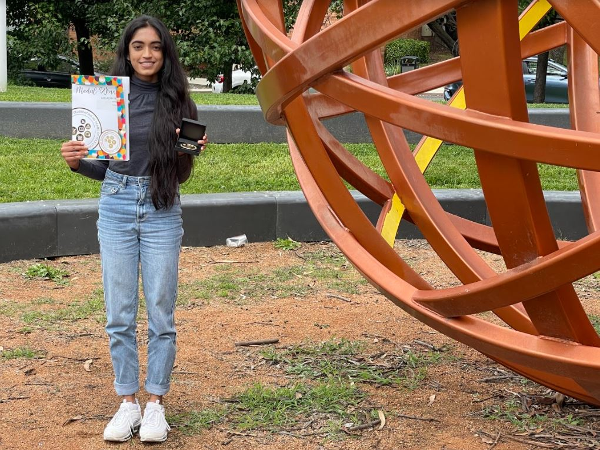
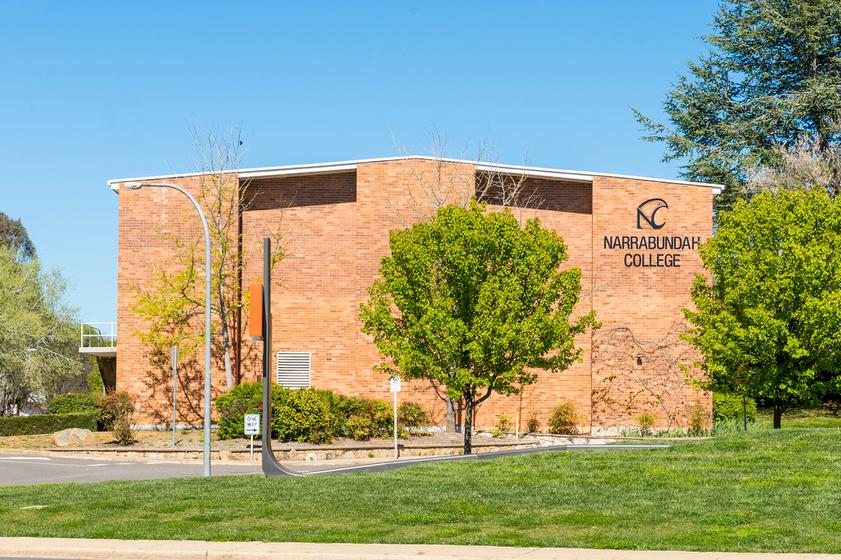

| Block A | Block B | Block C | Block D | Block E | Home | Block L | Block S | Switch CSS |
|  |
F BlockNarrabundah College's F block is a hub of innovation, offering students a diverse range of disciplines to explore. In its classrooms, students delve into engineering, architecture, and photography. In engineering classes, students tackle real-world challenges, honing their problem-solving skills and engineering prowess. Adjacent, architecture students explore design principles and sustainable practices, shaping the built environment of tomorrow. In photography studios, students capture the world through their lenses, mastering technical skills and visual storytelling. As they navigate F block, students are empowered to pursue their passions and make an impact in their chosen fields. |
Still F BlockNarrabundah College's F block stands as a beacon of innovation and creativity, where students delve into the realms of engineering, architecture, and photography. Within its walls, a diverse array of disciplines converge, offering students the opportunity to explore the intersection of design, technology, and visual storytelling. In the engineering classrooms of F block, students are immersed in the principles of structural design, mechanical systems, and electrical circuits. Guided by knowledgeable instructors, they tackle real-world challenges, from constructing bridges to designing robotics, honing their problem-solving skills and engineering prowess. Adjacent, architecture students are inspired by the possibilities of space and form as they delve into the art and science of building design. Through hands-on projects and digital modeling, they explore architectural principles, sustainable design practices, and urban planning concepts, preparing to shape the built environment of the future. In the photography studios of F block, students harness the power of visual storytelling to capture the world around them. From mastering the technical aspects of camera operation to exploring the nuances of composition and lighting, they develop their artistic vision and narrative skills, creating images that evoke emotion and inspire change. As students navigate the corridors of F block, they are empowered to explore their passions, push the boundaries of creativity, and chart their own paths toward success. Whether designing structures, capturing moments, or engineering solutions, they emerge from F block equipped with the knowledge, skills, and confidence to make a meaningful impact in their chosen fields. |
 |